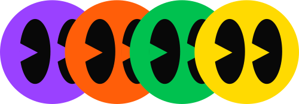
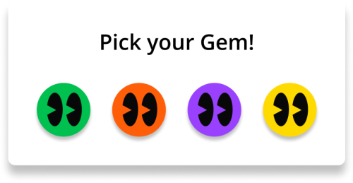
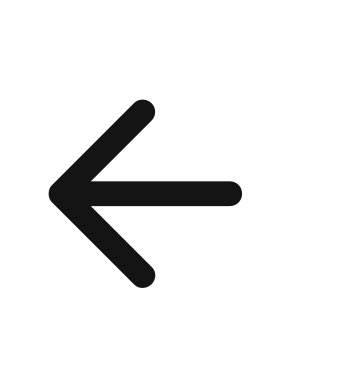
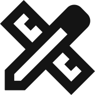
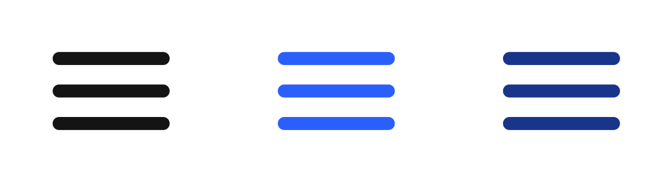
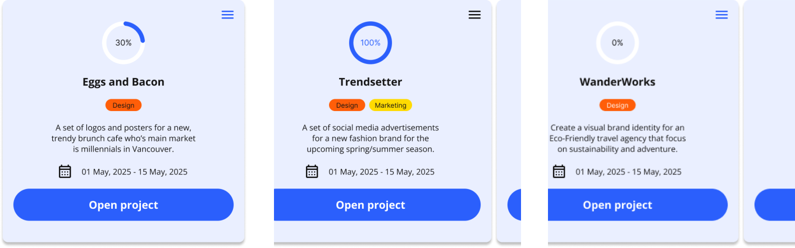

Mosaics iconography features key elements to elevate our users experience. We feature accessible, colour contrasting icons that feature Mosaic's colour scheme: blue, orange, yellow, green, and purple. They are complimented by white or black typography to compliment the icons and comply with accessibility standards. The icons we use across Mosaic come from Google Symbols, and both black and white versions are used to make our app accessible.
Gems
Our main iconography is our Gems, featured as the users profile image. Mosaic users can choose between four variations, purple, green, orange and yellow. Each of the icons feature two eyes as a face, shining brightly like the stained glass of a Mosaic. This represents how each one of our users are part of a bigger whole, of a bigger community; of one big Mosaic.


The pop up where you choose your Gem in the creation or editing of your profile on Mosaic features the four gems with drop shadows used throughout the pop up. This helps add definition for the pop up making it more easily visible for users. For more accessibility we use black font on white background so the instructions are clear and gems have enough contrast to be seen, following best accessibility practices.
Button Iconography

The arrow we choose to use is one with a tail. This creates movement within our app, motivating our users to do their best work. This along with the rest of our icons is rounded, creating a soft, welcoming vibe.
All of our projects created in Mosaic have an associating icon to show whether the project is a Design, UX/UI, Marketing, Frontend development or Backend development project.


Depending on the button functionality, the icons may change colours to show what state they are in: black (default), blue (selected), dark blue (hover).